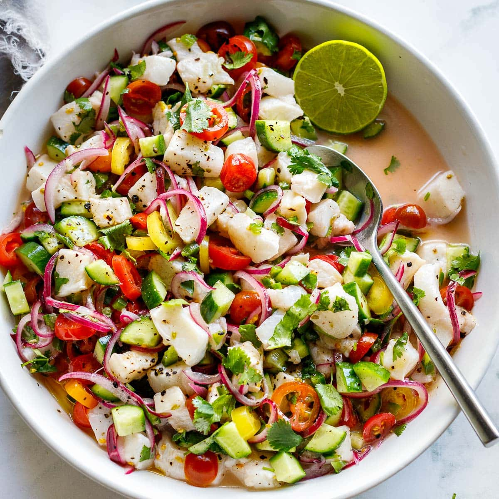

My Favorite Recipe
Ceviche
Ingredients
- Fish
- Lime
- Red Onion
- Tomato
- Cucumber
- Cilantro
- Jalepno
Instructions
- cut everything exept the lime and throw it into a bowl
- throw salt and lime juice in the mix, toss
- refreigerate for an hour
- no seriously that's it
